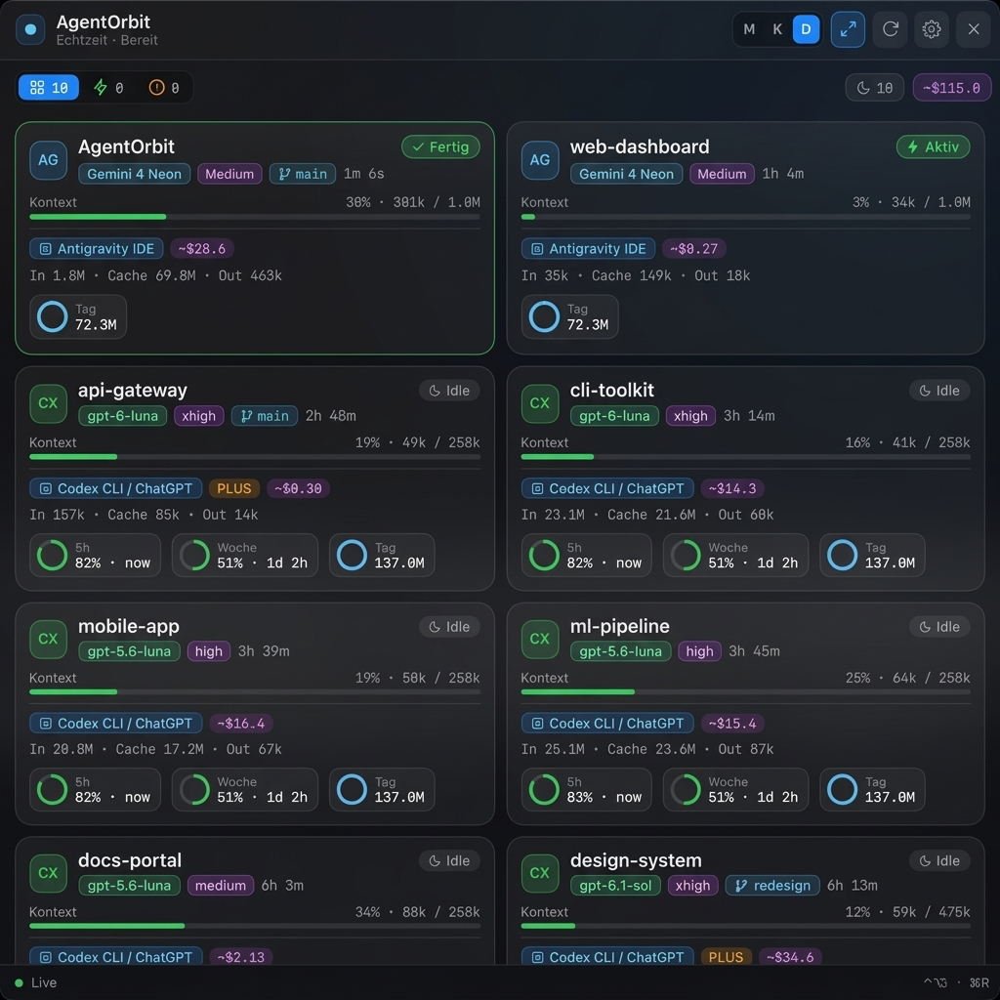
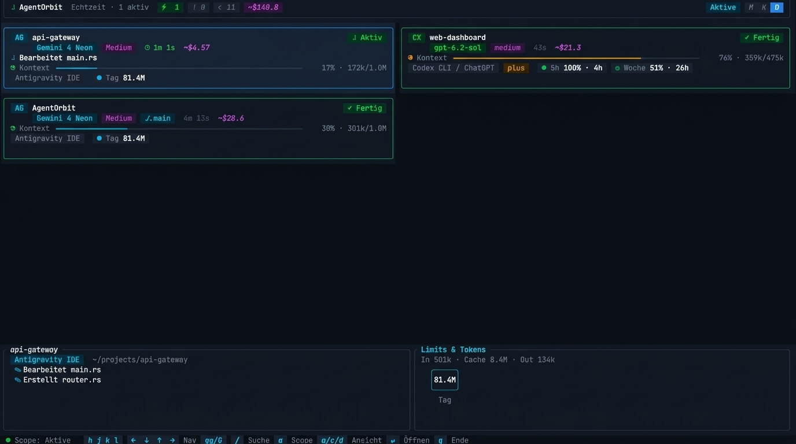

Your AI coding agents, in one crisp desktop & terminal orbit.
Deine KI-Coding-Agents kompakt im HUD & Terminal.
A tiny, unsigned cross-platform Desktop HUD (~8.6 MB) and Glass-HUD Terminal TUI (~2.2 MB) with Neovim navigation — tracking live mid-task status, checklists, ETA, Git branches, models, and rate-limit rings across Codex, Antigravity, Claude Code, OpenCode, and LM Studio Bionic.
Schlankes, signaturfreies Cross-Platform Desktop-HUD (~8,6 MB) & Glass-HUD Terminal-TUI (~2,2 MB) mit Neovim-Navigation: Live-Status, Checklisten, ETA, Git-Branches, Modelle und Limit-Ringe lokal für Codex, Antigravity, Claude Code, OpenCode & LM Studio Bionic.
Desktop HUD & Glass-HUD Terminal TUI
Desktop-HUD & Glass-HUD Terminal-TUI
Native glass overlay and TrueColor terminal interface — live in English or German (Auto / EN / DE).
Natives Glas-Overlay und TrueColor-Terminal-TUI – live auf Deutsch oder Englisch (Auto / DE / EN).


Designed to stay out of your way
Gemacht für paralleles Arbeiten
Shared read-only Rust core powering both a native glass Desktop HUD and a modern Neovim-style Terminal TUI — ~0% idle CPU, zero node_modules.
Gemeinsamer Read-Only Rust-Core für das native Glas-Desktop-HUD und die moderne Terminal-TUI im Neovim-Stil — ~0 % Idle-CPU, null node_modules.
Desktop HUD + Glass-HUD TUI
Desktop-HUD + Glass-HUD TUI
Use the floating translucent HUD (agentorbit-app) or jump into agentorbit tui with rounded TrueColor cards, gradient bars, circular % rings, Neovim keys (hjkl, gg/G, /) & mouse support.
Nutze das transparente Desktop-HUD (agentorbit-app) oder agentorbit tui mit abgerundeten TrueColor-Karten, Gradient-Balken, %-Ringen, Neovim-Tasten (hjkl, gg/G, /) & Maus-Steuerung.
Live Mid-Task Detection & Checklists
Sofortige Live-Erkennung & Checklisten
Detects already-running tasks immediately on launch with true runtime (⏱), live step checklists, ETA countdowns, and a smart ✓ Done badge that stays visible for 5 min.
Erkennt bereits laufende Tasks direkt beim Start inkl. echter Laufzeit (⏱), Live-Checklisten, ETA-Restzeit und ✓ Fertig-Badge (bleibt 5 Min. sichtbar).
3 Scopes, 3 Densities & Limit Rings
3 Scopes, 3 Ansichten & Limit-Ringe
Switch between Single, Active Only, and All plus M | K | D views with auto-fitting height, circular 5h / Weekly rings, and optional ~$ cost estimates.
Wechsle zwischen Einzeln, Alle Aktiven und Alle sowie M | K | D mit Live-Höhenanpassung, runden 5h-/Woche-Ringen und optionaler ~$-Kostenschätzung.
Layout-Aware Hotkeys & Snap-Grid
Layout-bewusste Kürzel & Einrast-Grid
QWERTZ/QWERTY-aware shortcut recorder with conflict detection, 24 pt snap-grid + 9 anchors, adjustable opacity (25%–100%), and 1-click IDE launcher.
QWERTZ/QWERTY-Kürzel-Recorder mit Konfliktprüfung, 24-pt-Einrast-Grid + 9 Anker, Deckkraft 25 %–100 % und 1-Klick-IDE-Starter.
Needs-Input & Completion Alerts
Wartet- & Fertig-Meldungen
Spot blocked prompts immediately with an amber badge and receive native OS notifications (+ optional sound) for input requests and task completion.
Erkennt sofort per orangem Badge, wenn ein Agent auf Freigabe/Rückfrage wartet, und meldet Eingabe nötig & Fertigstellung nativ (+ optionalem Ton).
Unsigned, Cross-Platform & Zero-Config
Signaturfrei, Hybrid-OS & Zero-Config
Runs natively on macOS, Linux, and Windows without App Store signing. Auto-discovers Codex, Antigravity, Claude Code, OpenCode v2, LM Studio Bionic & Pi.
Läuft nativ auf macOS, Linux und Windows ohne Apple-Signatur. Erkennt Codex, Antigravity, Claude Code, OpenCode v2, LM Studio Bionic & Pi automatisch.
Local Source Install (macOS & Linux)
Lokale Installation (macOS & Linux)
Compiles both agentorbit (~2.2 MB) and agentorbit-app (~8.6 MB) into ~/.local/bin with zero quarantine flags:
Baut agentorbit (~2,2 MB) und agentorbit-app (~8,6 MB) lokal nach ~/.local/bin – komplett ohne Quarantäne:
git clone https://github.com/SimHub/AgentOrbit.git && cd AgentOrbit ./scripts/install_v2.sh --open
~/.local/bin/agentorbit tui # Glass-HUD Terminal TUI ~/.local/bin/agentorbit-app & # Floating Desktop HUD
Portable Releases & Homebrew
Portable Releases & Homebrew
Download unsigned portable archives for macOS, Linux, or Windows from GitHub Releases, or install via Homebrew Formula:
Lade die signaturfreien Portable-Archive für macOS, Linux oder Windows aus den GitHub Releases oder nutze die Homebrew Formula:
brew install --HEAD ./packaging/homebrew/Formula/agentorbit.rb
cargo test --workspace cargo build --release --workspace